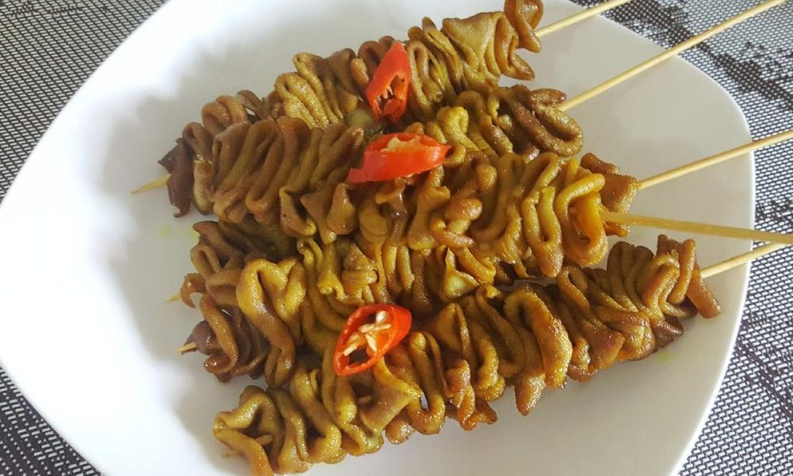

Tips
Bisnis Kuliner Terlaris: Kiat Sukses Membangun Bisnis Kuliner yang Mendominasi Pasar

Kata kunci “bisnis kuliner terlaris” menjadi fokus utama bagi pengusaha kuliner yang ingin mengukuhkan keberadaan mereka di pasar yang kompetitif ini
![bisnis kuliner]()
Pengetahuan akan dunia kuliner telah menciptakan peluang bisnis besar. Di tengah pesatnya pertumbuhan industri makanan dan minuman di Indonesia, banyak orang mencari peluang untuk membangun bisnis kuliner yang sukses. . Artikel ini akan membahas segala hal yang perlu Anda ketahui tentang bisnis kuliner terlaris, mulai dari pemahaman pasar hingga strategi pemasaran, serta contoh-contoh bisnis sukses di sektor ini.
Membangun Dasar yang Kuat untuk Bisnis Kuliner
Pahami Pasar Kuliner di Indonesia
Sebelum Anda terjun ke bisnis kuliner, penting untuk memahami pasar. Indonesia adalah negara dengan keragaman budaya dan kuliner yang luar biasa. Mengetahui preferensi makanan, tren kuliner, serta persaingan di daerah Anda akan memberi Anda keunggulan.
Ciptakan Konsep Kuliner yang Unik
Salah satu langkah awal yang penting adalah menciptakan konsep kuliner yang unik. Apakah Anda akan menawarkan masakan tradisional dengan sentuhan modern atau mungkin hidangan internasional dengan rasa lokal? Konsep yang berbeda akan membuat bisnis Anda menonjol di antara pesaing.
Jaga Kualitas Bahan Baku
Kualitas bahan baku adalah kunci kelezatan hidangan Anda. Pastikan Anda bekerja dengan pemasok tepercaya dan selalu menjaga kualitas bahan baku yang digunakan. Pelanggan selalu menghargai hidangan yang terbuat dari bahan berkualitas.
Tingkatkan Konsistensi
Konsistensi dalam penyajian makanan adalah penting. Pastikan setiap hidangan memiliki rasa dan tampilan yang konsisten. Ini akan membangun kepercayaan pelanggan dan menciptakan pengalaman yang tak terlupakan.
Budaya Layanan Pelanggan yang Luar Biasa
Layanan pelanggan yang baik adalah modal berharga dalam bisnis kuliner. Berikan pelanggan Anda pengalaman yang tak terlupakan dengan layanan yang ramah, efisien, dan responsif. Pelanggan yang bahagia cenderung kembali dan memberikan referensi positif.
Strategi Pemasaran untuk Bisnis Kuliner Terlaris
Kembangkan Prakata Online yang Kuat
Di era digital, memiliki kehadiran online yang kuat adalah suatu keharusan. Buat situs web yang menarik dan fungsional untuk bisnis kuliner Anda. Selain itu, manfaatkan media sosial untuk membangun jaringan pelanggan dan berbagi konten berkualitas.
Optimalkan SEO Lokal
Untuk bisnis kuliner, SEO lokal sangat penting. Pastikan informasi bisnis Anda, seperti alamat dan nomor telepon, mudah ditemukan dalam hasil pencarian lokal. Beri tahu pelanggan di mana Anda berlokasi dan apa yang membuat Anda istimewa.
Gunakan Media Sosial untuk Meningkatkan Terlihat
Media sosial adalah alat yang kuat untuk membangun brand awareness. Bagikan foto makanan yang menggugah selera, ulasan pelanggan yang positif, dan konten menarik yang terkait dengan kuliner. Pertimbangkan juga beriklan di platform media sosial.
Lakukan Promosi Khusus
Tawarkan promosi khusus seperti diskon, paket menu, atau pengalaman kuliner unik. Ini dapat meningkatkan kunjungan pelanggan dan menciptakan buzz positif di sekitar bisnis Anda.
Baca juga:
Strategi Sukses dalam Bisnis F&B: Menghadapi Tantangan dan Peluang
F&B Adalah: Peran dan Makna Penting Dalam Dunia Kuliner
Makanan Lezat dan Bergizi: Rahasia Kebahagiaan di Dapur Anda
Contoh Bisnis Kuliner Terlaris di Indonesia
Warung Makan Sederhana yang Sukses
Warung makan tradisional yang menyajikan hidangan lokal dengan cita rasa otentik tetap menjadi favorit di Indonesia. Beberapa warung makan sederhana telah mencapai kesuksesan besar dengan menjaga kualitas dan konsistensi hidangan mereka.
Gerai Makanan Cepat Saji
Bisnis gerai makanan cepat saji internasional telah menyebar dengan cepat di seluruh Indonesia. Mereka menawarkan hidangan yang sesuai dengan selera lokal, dan dengan kampanye pemasaran yang kuat, mereka telah mendominasi pasar.
Kafe dan Restoran dengan Tema Unik
Banyak kafe dan restoran di Indonesia sukses dengan menghadirkan konsep unik, seperti tema alam, budaya, atau seni. Ini menciptakan pengalaman makan yang menarik dan menarik pengunjung.
Tantangan dalam Bisnis Kuliner
Persaingan yang Sengit
Bisnis kuliner adalah bidang yang sangat kompetitif. Anda harus mampu bersaing dengan bisnis sejenis dan terus berinovasi untuk tetap relevan.
Manajemen Biaya dan Marginal
Mengelola biaya operasional dan menjaga margin keuntungan adalah tantangan yang serius. Bisnis kuliner seringkali memiliki biaya tinggi terkait dengan bahan baku dan tenaga kerja.
Kesimpulan: Sukses dalam Bisnis Kuliner Terlaris
Membangun bisnis kuliner terlaris adalah perjalanan yang menarik dan menantang. Dengan pemahaman pasar yang mendalam, konsep unik, pemasaran yang efektif, dan fokus pada kualitas, Anda dapat mencapai kesuksesan besar dalam industri kuliner. Ingatlah bahwa konsistensi dalam penyajian makanan dan layanan pelanggan yang baik adalah kunci kesuksesan jangka panjang. Bisnis kuliner yang sukses adalah hasil dari dedikasi, kerja keras, dan komitmen untuk memberikan pengalaman kuliner yang tak terlupakan kepada pelanggan. Teruslah belajar

-

 Review1 year ago
Review1 year agoReview Kulineran di Nasi Uduk Cipete XXI, Menu dan Harga
-
 Jajan2 years ago
Jajan2 years agoNasi Cokot: Eksplorasi Kelezatan dan Cerita di Balik Kuliner Tradisional Indonesia
-

 Franchise1 year ago
Franchise1 year agoReview Kemitraan Franchise Es Teler Sultan
-

 Review1 year ago
Review1 year agoReview Tempat Makan Sengoseng Tebet Jakarta Selatan
-

 Review1 year ago
Review1 year agoReview Siomay Mitra Jatinegara yang Sangat Lezat
-
 Kuliner1 year ago
Kuliner1 year agoReview Pecel Lele Lamongan 35 yang Menggoda Selera
-
Uncategorized1 year ago
Shopee Indonesia Akan Tutup Permanen Layanan Customer Service Di Jakarta Pengumanan Hari Senin 20 Mei 2024
-

 Review1 year ago
Review1 year agoMenikmati Kelezatan Kuliner Nusantara di Warteg 21 Pulomas: Sebuah Review Mendalam
Komentar Terbaru